Inhalt Index DeskTop Bronstein

 Dynamische Systeme und Chaos Quantitative Beschreibung von Attraktoren Wahrscheinlichkeitsmaße auf Attraktoren Elemente der Ergodentheorie
Dynamische Systeme und Chaos Quantitative Beschreibung von Attraktoren Wahrscheinlichkeitsmaße auf Attraktoren Elemente der Ergodentheorie


Das dynamische System  auf M mit invariantem Maß
auf M mit invariantem Maß  sei ergodisch. Es seien 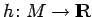 eine beliebige stetige Funktion, 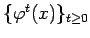 ein beliebiger Semiorbit und das räumliche Mittel 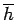 sei ersetzt durch das zeitliche Mittel, d.h. durch 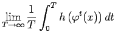 im zeitkontinuierlichen Fall und durch 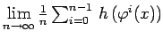 im zeitdiskreten Fall. Bezüglich h wird die Autokorrelationsfunktion längs des Semiorbits zu einem Zeitpunkt 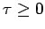 für einen Fluß durch
sei ergodisch. Es seien 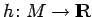 eine beliebige stetige Funktion, 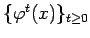 ein beliebiger Semiorbit und das räumliche Mittel 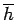 sei ersetzt durch das zeitliche Mittel, d.h. durch 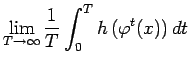 im zeitkontinuierlichen Fall und durch 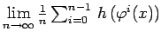 im zeitdiskreten Fall. Bezüglich h wird die Autokorrelationsfunktion längs des Semiorbits zu einem Zeitpunkt 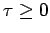 für einen Fluß durch
| 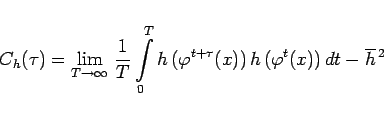 | (17.34a) |
und für ein zeitdiskretes System durch
| 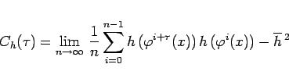 | (17.34b) |
definiert. Die Autokorrelationsfunktion wird auch für negative Zeiten erklärt, indem 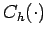 als gerade Funktion auf  bzw.
bzw.  aufgefaßt wird.
aufgefaßt wird.
Periodische oder quasiperiodische Orbits führen zu einem periodischen bzw. quasiperiodischen Verhalten von 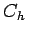. Ein schneller Abfall von 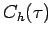 für wachsende 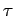 und beliebiger Testfunktion h deutet auf chaotisches Verhalten hin. Fällt für wachsende sogar mit exponentieller Geschwindigkeit, so ist dies ein Anzeichen für mischendes Verhalten.